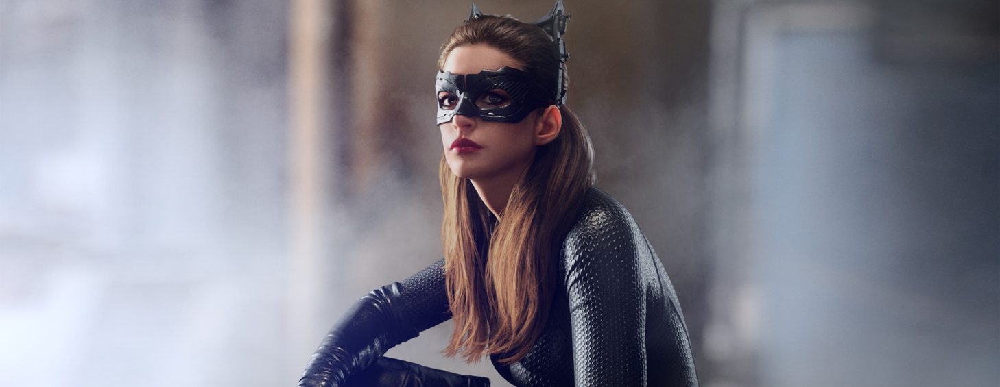
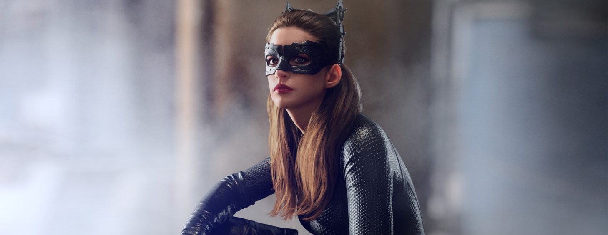
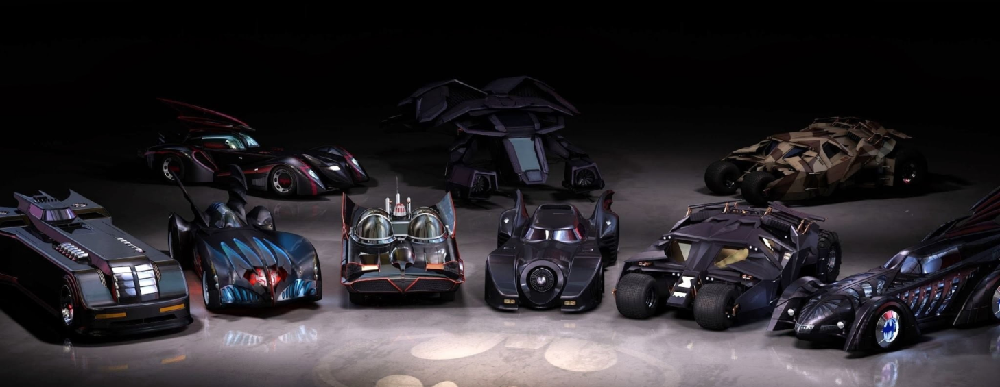
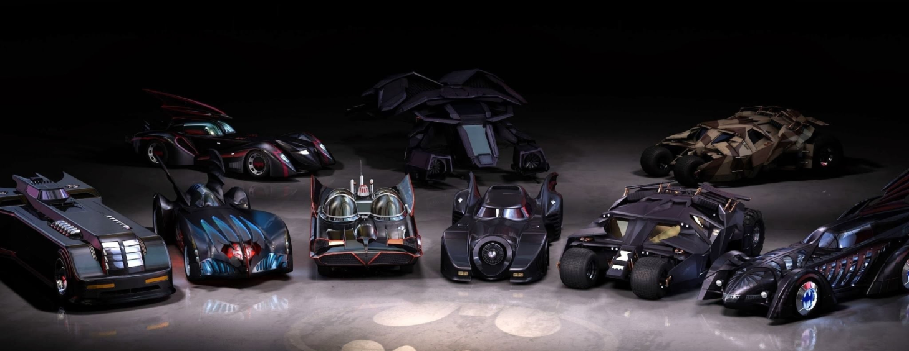

BATMAN AU CINÉMA
Le personnage de Batman est un super héros de l’univers de DC Comics. Il a été créé par le dessinateur Bob Kane et le scénariste Bill Finger et apparaît pour la première fois dans le comic book Detective Comics en 1939. Batman se différencie de Superman, alors héros majeur de DC, car il n’a aucun pouvoir. Il sera porté au cinema pour la première fois en 1943 par Lewis Wilson et bénéficiera de nombreux reboot, donnant l’occasion à de multiples acteurs d’interpréter l’homme chauve souris. Voici les trois derniers:

Robert Pattinson
2022


Christian Bale
2006 - 2008 - 2012


Ben Affleck
2016 - 2017 / 2020 - 2023


 


 



NÉMESIS
Batman souhaite éradiquer la criminalité de Gotham. C’est pourquoi, il affrontera la plupart du temps, des vilains sans capacités surnaturelles mais particulièrement violents ou psjchopathes. Avec son introduction dans la Justice League ¡I aura l’occasion de se mesurer à des antagonistes qui défient l’imagination et les lois de la phjsique. Parmis les derniers ennemis emblématiques que nous avons pu voir au cinéma, on retrouve:

Robert Pattinson
2022

Robert Pattinson
2022

Robert Pattinson
2022
MULTIMÉDIA
ACTION, ADVENTURE Batmon Begins IMDB: 8.2 Le jeune Bruce Wajne assiste impuissant au meurtre de ses parents. Profondément traumatisé, il grandit obnubilé par un désir de vengeance. La Ligue des ombres, une secte de guerriers ninja dirigée par Ra’s al Ghul, se chargera de son entraînement. De retour chez lui à Gotham, avec l’aide de son majordome Alfred Pennjworth, Bruce Wajne se lance alors dans la lutte contre le crime sous le nom de Batman.

PRENONS CONTACT
c'est en dehors des règles.
The Dark Knight : Le Chevalier Noir -
Le Joker à Batman (2008)
The Dark Knight : Le Chevalier Noir -
Harvej Dent (2008)
The Dark Knight Rises -
Batman à James Gordon (2012)
The Dark Knight Rises -
Bane à Batman (2012)
- En pleine journée Alfred? Pas très subtile.
- La Lam borghini alors.., beaucoup plus subtile.
The Dark Knight: Le Chevalier Noir -
Alfred et Batman (2008)
Batman à Mr Freeze (1997)
Batman (2022)
- Pour mieux apprendre à nous relever. Batman Begins -
Thomas Wajne à Bruce Wajne 8 ans (2005)
l’aube de la justice, Alfred à Batman (2016)